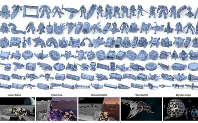
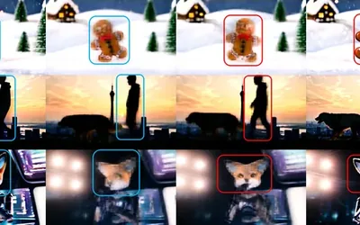
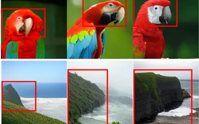
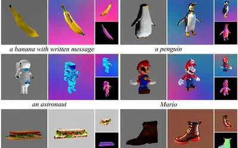

Yonghao Yu于永昊
于永昊 · Yonghao Yu · ヨンハオ ユ
Teaching generative models to look ahead.
让生成模型学会向前看。
Ph.D. student at The University of Tokyo.
东京大学博士生。
About简介
I am a Ph.D. student in Yamasaki Lab at The University of Tokyo, advised by Prof. Toshihiko Yamasaki, and a research intern at Alaya Lab. My Ph.D. is supported by the JST SPRING program.
我是东京大学山崎研究室（Yamasaki Lab）的博士生，导师是山崎俊彦（Toshihiko Yamasaki）教授，同时在 Alaya Lab 担任研究实习生。我的博士研究由 JST SPRING 项目资助。
I work on visual generative models. Much of my recent work asks whether training signals from the future, which I call foresight, can help autoregressive image and video generators plan ahead without changing how they run at inference. I also build 3D generation systems for programmable worlds.
我的研究方向是视觉生成模型。近期的工作主要围绕一个问题：来自未来的训练信号（我称之为 foresight，即“预见”）能否帮助自回归图像和视频生成模型提前规划，同时不改变推理方式。我也在做面向可编程世界的 3D 生成系统。
Before that, I received my M.Eng. from Waseda University and my B.Eng. in Cyber Science and Engineering from Sichuan University.
News动态
-
Released MeshAxiom, an agent-native 3D foundation stack, with Alaya Lab: project, code and model.
与 Alaya Lab 发布 MeshAxiom，一个智能体原生（agent-native）的 3D 基础技术栈：项目主页、代码和模型。
-
EditHero, a benchmark for long-horizon part-level 3D editing, is on arXiv.
EditHero（长程部件级 3D 编辑基准）已发布在 arXiv。
-
Video-Mirai is accepted to NeurIPS 2026.
Video-Mirai 被 NeurIPS 2026 接收。
-
WorldSculpt and KaiNinja are on arXiv.
WorldSculpt 和 KaiNinja 已发布在 arXiv。
-
Joined Alaya Lab as a research intern.
加入 Alaya Lab 担任研究实习生。
-
Mirai is accepted to CVPR 2026.
Mirai 被 CVPR 2026 接收。
-
Started my Ph.D. at The University of Tokyo, supported by JST SPRING.
进入东京大学攻读博士学位，获 JST SPRING 项目资助。
-
BoostDream is accepted to IJCAI 2024.
BoostDream 被 IJCAI 2024 接收。
Selected Publications精选论文
-

MeshAxiom: An Agent-Native 3D Foundation Stack for Programmable Worlds
MeshAxiom-Base generates compact explicit meshes from one image and a requested face budget; file-based tools let agents inspect and edit them, and reuse them as modules in scene programs.
MeshAxiom-Base 根据一张图像和指定的面数预算生成紧凑的显式网格；基于文件的工具让智能体能够检查、编辑这些网格，并在场景程序中把它们作为模块复用。
-

Video-Mirai: Autoregressive Video Diffusion Models Need Foresight
A training-only foresight objective for autoregressive video diffusion: future segments supervise the current causal state during training, and inference cost stays the same.
面向自回归视频扩散模型的纯训练期 foresight 目标：训练时用未来片段监督当前的因果状态，推理开销保持不变。
BibTeX
@inproceedings{yu2026videomirai, title = {Video-Mirai: Autoregressive Video Diffusion Models Need Foresight}, author = {Yu, Yonghao and Huang, Lang and Li, Runyi and Wang, Zerun and Yamasaki, Toshihiko}, booktitle = {Advances in Neural Information Processing Systems (NeurIPS)}, year = {2026} } -

Mirai: Autoregressive Visual Generation Needs Foresight
Foresight for autoregressive image generation: aligning internal states with signals from future tokens on the 2D grid speeds up LlamaGen convergence by up to 10x, with no architecture change or inference overhead. (Mirai means future in Japanese.)
为自回归图像生成引入 foresight：在二维网格上把内部状态与来自未来 token 的信号对齐，使 LlamaGen 的收敛最多加快 10 倍，且无需改动架构、不增加推理开销。（Mirai 在日语中意为“未来”。）
BibTeX
@InProceedings{Yu_2026_CVPR, author = {Yu, Yonghao and Huang, Lang and Wang, Zerun and Li, Runyi and Yamasaki, Toshihiko}, title = {Mirai: Autoregressive Visual Generation Needs Foresight}, booktitle = {Proceedings of the IEEE/CVF Conference on Computer Vision and Pattern Recognition (CVPR)}, month = {June}, year = {2026}, pages = {30511-30520} } -

BoostDream: Efficient Refining for High-Quality Text-to-3D Generation from Multi-View Diffusion
A plug-and-play refiner that turns coarse feed-forward 3D assets into high-quality ones with multi-view SDS guided by normal maps, avoiding the Janus problem.
一个即插即用的精炼方法，借助法线图引导的多视角 SDS，把前馈生成的粗糙 3D 资产提升为高质量资产，并避免 Janus 问题。
BibTeX
@inproceedings{ijcai2024p598, title = {BoostDream: Efficient Refining for High-Quality Text-to-3D Generation from Multi-View Diffusion}, author = {Yu, Yonghao and Zhu, Shunan and Qin, Huai and Li, Haorui}, booktitle = {Proceedings of the Thirty-Third International Joint Conference on Artificial Intelligence, {IJCAI-24}}, publisher = {International Joint Conferences on Artificial Intelligence Organization}, editor = {Kate Larson}, pages = {5407--5415}, year = {2024}, month = {8}, note = {Main Track}, doi = {10.24963/ijcai.2024/598}, url = {https://doi.org/10.24963/ijcai.2024/598}, }
Publications论文
2026
-
MeshAxiom: An Agent-Native 3D Foundation Stack for Programmable Worlds
MeshAxiom-Base generates compact explicit meshes from one image and a requested face budget; file-based tools let agents inspect and edit them, and reuse them as modules in scene programs.
MeshAxiom-Base 根据一张图像和指定的面数预算生成紧凑的显式网格；基于文件的工具让智能体能够检查、编辑这些网格，并在场景程序中把它们作为模块复用。
-
EditHero: A Benchmark for Long-Horizon Part-Level 3D Editing and Vibe Modeling
A benchmark for long-horizon, part-level 3D editing with an exact target after every edit, comparing 3D editors with LLM and VLM agents that edit meshes through code.
一个长程、部件级的 3D 编辑基准，每一步编辑都有精确的目标，用于比较 3D 编辑方法与通过代码编辑网格的 LLM 和 VLM 智能体。
BibTeX
@misc{yu2026editherobenchmarklonghorizonpartlevel, title={EditHero: A Benchmark for Long-Horizon Part-Level 3D Editing and Vibe Modeling}, author={Ruihan Yu and Yu-Ju Tsai and Muyao Niu and Runyi Li and Lian Fu and Hanqing Liu and Zheng-Hui Huang and Yonghao Yu and Sho Kuno and Ming-Hsuan Yang and Kaipeng Zhang and Zhixiang Wang}, year={2026}, eprint={2610.02298}, archivePrefix={arXiv}, primaryClass={cs.CV}, url={https://arxiv.org/abs/2610.02298}, } -
KaiNinja: Extending Native 3D Generators to the Part Level
Extends a native image-to-3D generator (TRELLIS.2) to the part level, generating separate part meshes from one image without masks or a segmenter.
把原生的图像到 3D 生成器（TRELLIS.2）扩展到部件级，无需掩码或分割器即可从单张图像生成分离的部件网格。
BibTeX
@misc{yu2026kaininjaextendingnative3d, title={KaiNinja: Extending Native 3D Generators to the Part Level}, author={Ruihan Yu and Lian Fu and Muyao Niu and Zheng-hui Huang and Yu-Ju Tsai and Sho Kuno and Fengbo Lan and Yonghao Yu and Erwin Wu and Ming-Hsuan Yang and Kaipeng Zhang and Zhixiang Wang}, year={2026}, eprint={2609.15659}, archivePrefix={arXiv}, primaryClass={cs.GR}, url={https://arxiv.org/abs/2609.15659}, } -
WorldSculpt: Generating Compositional Worlds from Grounded Videos
Generates cluttered scenes with hundreds of objects as individual meshes in a shared world frame by adapting a single-object 3D prior to multi-view observations.
把单物体 3D 先验适配到多视角观测，将包含上百个物体的杂乱场景生成为共享世界坐标系中的独立网格。
BibTeX
@misc{niu2026worldsculptgeneratingcompositionalworlds, title={WorldSculpt: Generating Compositional Worlds from Grounded Videos}, author={Muyao Niu and Jixuan He and Ruihan Yu and Lian Fu and Yonghao Yu and Zheng-Hui Huang and Yifan Zhan and Fengbo Lan and Yongtao Ge and Yinqiang Zheng and Kaipeng Zhang and Zhixiang Wang}, year={2026}, eprint={2609.05416}, archivePrefix={arXiv}, primaryClass={cs.CV}, url={https://arxiv.org/abs/2609.05416}, } -
Video-Mirai: Autoregressive Video Diffusion Models Need Foresight
A training-only foresight objective for autoregressive video diffusion: future segments supervise the current causal state during training, and inference cost stays the same.
面向自回归视频扩散模型的纯训练期 foresight 目标：训练时用未来片段监督当前的因果状态，推理开销保持不变。
BibTeX
@inproceedings{yu2026videomirai, title = {Video-Mirai: Autoregressive Video Diffusion Models Need Foresight}, author = {Yu, Yonghao and Huang, Lang and Li, Runyi and Wang, Zerun and Yamasaki, Toshihiko}, booktitle = {Advances in Neural Information Processing Systems (NeurIPS)}, year = {2026} } -
FedDetox: Robust Federated SLM Alignment via On-Device Data Sanitization
Federated alignment for small language models: on-device classifiers distilled from safety-aligned teachers replace unsafe client samples, keeping safety close to centralized training.
面向小语言模型的联邦对齐：从安全对齐的教师模型蒸馏出端侧分类器，替换不安全的客户端样本，使安全性接近集中式训练。
BibTeX
@inproceedings{zhu2026feddetox, title = {FedDetox: Robust Federated SLM Alignment via On-Device Data Sanitization}, author = {Zhu, Shunan and Chen, Jiawei and Yu, Yonghao and Ochiai, Hideya}, booktitle = {2026 International Joint Conference on Neural Networks (IJCNN)}, pages = {1--8}, year = {2026}, publisher = {IEEE}, doi = {10.1109/IJCNN69854.2026.11729361} } -
Mirai: Autoregressive Visual Generation Needs Foresight
Foresight for autoregressive image generation: aligning internal states with signals from future tokens on the 2D grid speeds up LlamaGen convergence by up to 10x, with no architecture change or inference overhead. (Mirai means future in Japanese.)
为自回归图像生成引入 foresight：在二维网格上把内部状态与来自未来 token 的信号对齐，使 LlamaGen 的收敛最多加快 10 倍，且无需改动架构、不增加推理开销。（Mirai 在日语中意为“未来”。）
BibTeX
@InProceedings{Yu_2026_CVPR, author = {Yu, Yonghao and Huang, Lang and Wang, Zerun and Li, Runyi and Yamasaki, Toshihiko}, title = {Mirai: Autoregressive Visual Generation Needs Foresight}, booktitle = {Proceedings of the IEEE/CVF Conference on Computer Vision and Pattern Recognition (CVPR)}, month = {June}, year = {2026}, pages = {30511-30520} }
2024
-
Logit Poisoning Attack in Distillation-based Federated Learning and its Countermeasures
A two-stage logit poisoning attack on distillation-based federated learning, and a defense that compares uploaded logits with estimated benign ones.
针对基于蒸馏的联邦学习的两阶段 logit 投毒攻击，以及一种把上传的 logit 与估计的良性 logit 进行比较的防御方法。
BibTeX
@article{DBLP:journals/corr/abs-2401-17746, author = {Yonghao Yu and Shunan Zhu and Jinglu Hu}, title = {Logit Poisoning Attack in Distillation-based Federated Learning and its Countermeasures}, journal = {CoRR}, volume = {abs/2401.17746}, year = {2024}, url = {https://doi.org/10.48550/arXiv.2401.17746}, doi = {10.48550/ARXIV.2401.17746}, eprinttype = {arXiv}, eprint = {2401.17746}, timestamp = {Tue, 04 Nov 2025 12:45:08 +0100}, biburl = {https://dblp.org/rec/journals/corr/abs-2401-17746.bib}, bibsource = {dblp computer science bibliography, https://dblp.org} } -
BoostDream: Efficient Refining for High-Quality Text-to-3D Generation from Multi-View Diffusion
A plug-and-play refiner that turns coarse feed-forward 3D assets into high-quality ones with multi-view SDS guided by normal maps, avoiding the Janus problem.
一个即插即用的精炼方法，借助法线图引导的多视角 SDS，把前馈生成的粗糙 3D 资产提升为高质量资产，并避免 Janus 问题。
BibTeX
@inproceedings{ijcai2024p598, title = {BoostDream: Efficient Refining for High-Quality Text-to-3D Generation from Multi-View Diffusion}, author = {Yu, Yonghao and Zhu, Shunan and Qin, Huai and Li, Haorui}, booktitle = {Proceedings of the Thirty-Third International Joint Conference on Artificial Intelligence, {IJCAI-24}}, publisher = {International Joint Conferences on Artificial Intelligence Organization}, editor = {Kate Larson}, pages = {5407--5415}, year = {2024}, month = {8}, note = {Main Track}, doi = {10.24963/ijcai.2024/598}, url = {https://doi.org/10.24963/ijcai.2024/598}, }
2022
-
Spotlight on Video Piracy Websites: Familial Analysis Based on Multidimensional Features
Proactively discovers video piracy websites with 96.2% detection accuracy and groups them into families from layout, content and infrastructure features.
主动发现盗版视频网站，检测准确率达 96.2%，并基于页面布局、内容和基础设施特征把这些网站聚类为家族。
BibTeX
@inproceedings{DBLP:conf/ksem/WangYPSH22, author = {Chenlin Wang and Yonghao Yu and Ao Pu and Fan Shi and Cheng Huang}, editor = {G{\'{e}}rard Memmi and Baijian Yang and Linghe Kong and Tianwei Zhang and Meikang Qiu}, title = {Spotlight on Video Piracy Websites: Familial Analysis Based on Multidimensional Features}, booktitle = {Knowledge Science, Engineering and Management - 15th International Conference, {KSEM} 2022, Singapore, August 6-8, 2022, Proceedings, Part {III}}, series = {Lecture Notes in Computer Science}, volume = {13370}, pages = {272--288}, publisher = {Springer}, year = {2022}, url = {https://doi.org/10.1007/978-3-031-10989-8\_22}, doi = {10.1007/978-3-031-10989-8\_22}, timestamp = {Sat, 15 Nov 2025 13:47:38 +0100}, biburl = {https://dblp.org/rec/conf/ksem/WangYPSH22.bib}, bibsource = {dblp computer science bibliography, https://dblp.org} }
*equal contribution†corresponding author
*同等贡献†通讯作者
Education教育经历
-
Ph.D. student, Graduate School of Information Science and Technology (Yamasaki Lab)
博士在读，信息理工学系研究科（山崎研究室）
-
M.Eng., Graduate School of Information, Production and Systems
工学硕士，信息生产系统研究科
Experience工作经历
-
Research Assistant, The University of Tokyo
东京大学 研究助理
Large-scale visual generative modeling under the Collaborative Industry Program.
在产学合作项目中从事大规模视觉生成模型研究。
Honors荣誉与资助
-
JST Support for Pioneering Research Initiated by the Next Generation
日本科学技术振兴机构（JST）次世代研究者挑战性研究项目